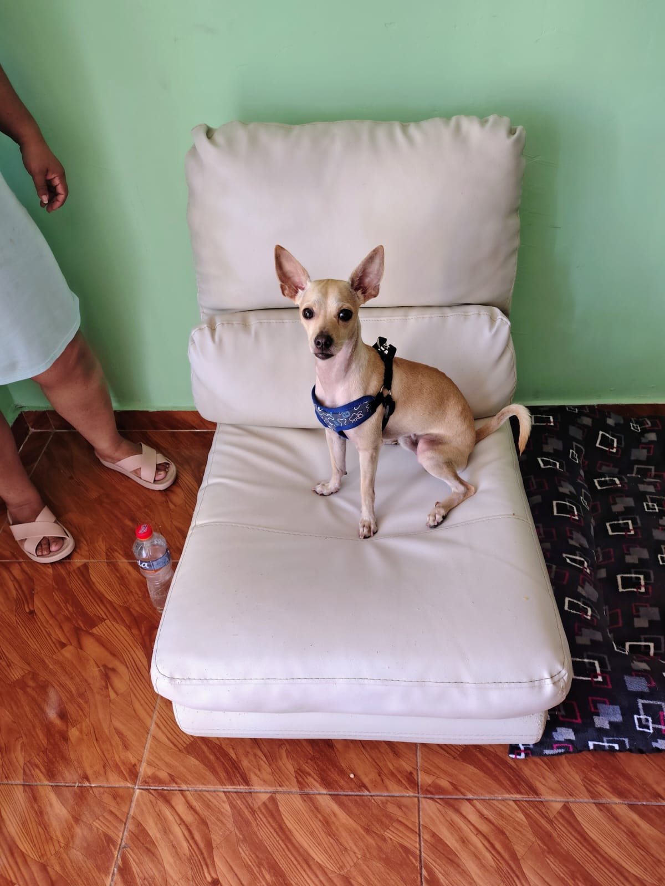
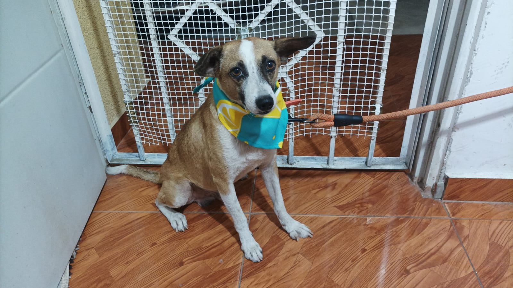

Max
My baby! I've raised him since he was just 15 days old. He's 2 years now — super energetic, playful, and a little bit crazy (in the best way).
Welcome to my pets page. Here you can learn a little more about the companions that make my days louder, funnier, and better.

My baby! I've raised him since he was just 15 days old. He's 2 years now — super energetic, playful, and a little bit crazy (in the best way).

A natural guardian — calm, watchful, and so loyal. I adopted him from the streets, and he's been my trustworthy companion ever since.
Scooby-Doo! The friendly, cowardly but brave when it counts dog who loves snacks and solving mysteries with the gang.
A timid farm dog who keeps his owners Muriel and Eustace safe from supernatural threats. Not the brightest, but his heart is in the right place.
Agent P, the silent platypus secret agent who foils Dr. Doofenshmirtz's evil plans daily. He doesn't say much, but his actions speak louder than words.
A fiery lizard Pokémon with a flame burning at the tip of its tail. Loyal to its trainer, but that flame determines its life — keep it safe!